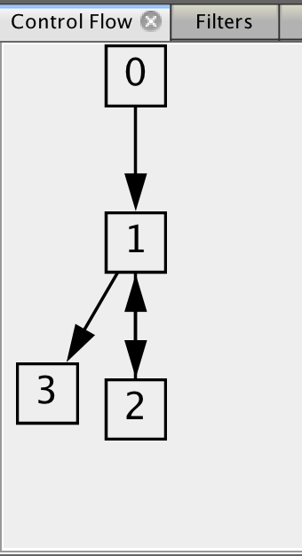
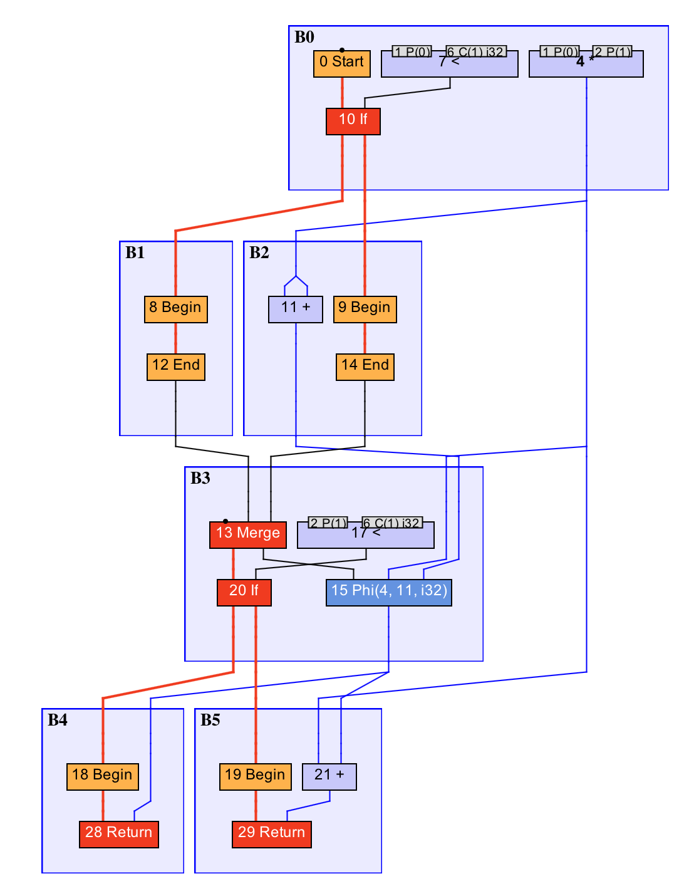

18 | 即时编译器的中间表达形式
在上一章中，我利用了程序控制流图以及伪代码，来展示即时编译器中基于 profile 的优化。不过，这并非实际的优化过程。
1. 中间表达形式（IR）
在编译原理课程中，我们通常将编译器分为前端和后端。其中，前端会对所输入的程序进行词法分析、语法分析、语义分析，然后生成中间表达形式，也就是 IR（Intermediate Representation ）。后端会对 IR 进行优化，然后生成目标代码。
如果不考虑解释执行的话，从 Java 源代码到最终的机器码实际上经过了两轮编译：Java 编译器将 Java 源代码编译成 Java 字节码，而即时编译器则将 Java 字节码编译成机器码。
对于即时编译器来说，所输入的 Java 字节码剥离了很多高级的 Java 语法，而且其采用的基于栈的计算模型非常容易建模。因此，即时编译器并不需要重新进行词法分析、语法分析以及语义分析，而是直接将 Java 字节码作为一种 IR。
不过，Java 字节码本身并不适合直接作为可供优化的 IR。这是因为现代编译器一般采用静态单赋值（Static Single Assignment，SSA）IR。这种 IR 的特点是每个变量只能被赋值一次，而且只有当变量被赋值之后才能使用。
y = 1;
y = 2;
x = y;
举个例子（来源），上面这段代码所对应的 SSA 形式伪代码是下面这段：
y1 = 1;
y2 = 2;
x1 = y2;
在源代码中，我们可以轻易地发现第一个对 y 的赋值是冗余的，但是编译器不能。传统的编译器需要借助数据流分析（具体的优化叫reaching definition），从后至前依次确认哪些变量的值被覆盖（kill）掉。
不过，如果借助了 SSA IR，编译器则可以通过查找赋值了但是没有使用的变量，来识别冗余赋值。
除此之外，SSA IR 对其他优化方式也有很大的帮助，例如常量折叠（constant folding）、常量传播（constant propagation）、强度削减（strength reduction）以及死代码删除（dead code elimination）等。
示例：
x1=4*1024 经过常量折叠后变为 x1=4096
x1=4; y1=x1 经过常量传播后变为 x1=4; y1=4
y1=x1*3 经过强度削减后变为 y1=(x1<<1)+x1
if(2>1){y1=1;}else{y2=1;}经过死代码删除后变为 y1=1
部分同学可能会手动进行上述优化，以期望能够达到更高的运行效率。实际上，对于这些简单的优化，编译器会代为执行，以便程序员专注于代码的可读性。
SSA IR 会带来一个问题，那便是不同执行路径可能会对同一变量设置不同的值。例如下面这段代码 if 语句的两个分支中，变量 y 分别被赋值为 0 或 1，并且在接下来的代码中读取 y 的值。此时，根据不同的执行路径，所读取到的值也很有可能不同。
x = ..;
if (x > 0) {
y = 0;
} else {
y = 1;
}
x = y;
为了解决这个问题，我们需要引入一个 Phi 函数的概念，能够根据不同的执行路径选择不同的值。于是，上面这段代码便可以转换为下面这段 SSA 伪代码。这里的 Phi 函数将根据前面两个分支分别选择 y1、y2 的值，并赋值给 y3。
x1 = ..;
if (x1 > 0) {
y1 = 0;
} else {
y2 = 1;
}
y3 = Phi(y1, y2);
x2 = y3;
总之，即时编译器会将 Java 字节码转换成 SSA IR。更确切的说，是一张包含控制流和数据流的 IR 图，每个字节码对应其中的若干个节点（注意，有些字节码并没有对应的 IR 节点）。然后，即时编译器在 IR 图上面进行优化。
我们可以将每一种优化看成一个独立的图算法，它接收一个 IR 图，并输出经过转换后的 IR 图。整个编译器优化过程便是一个个优化串联起来的。
2. Sea-of-nodes
HotSpot 里的 C2 采用的是一种名为 Sea-of-Nodes 的 SSA IR。它的最大特点，便是去除了变量的概念，直接采用变量所指向的值，来进行运算。
在上面这段 SSA 伪代码中，我们使用了多个变量名 x1、x2、y1 和 y2。这在 Sea-of-Nodes 将不复存在。
取而代之的则是对应的值，比如说 Phi(y1, y2) 变成 Phi(0, 1)，后者本身也是一个值，被其他 IR 节点所依赖。正因如此，常量传播在 Sea-of-Nodes 中变成了一个 no-op。
Graal 的 IR 同样也是 Sea-of-Nodes 类型的，并且可以认为是 C2 IR 的精简版本。由于 Graal 的 IR 系统更加容易理解，而且工具支持相对来说也比较全、比较新，所以下面我将围绕着 Graal 的 IR 系统来讲解。
尽管 IR 系统不同，C2 和 Graal 所实现的优化大同小异。对于那小部分不同的地方，它们也在不停地相互“借鉴”。所以你无须担心不通用的问题。
为了方便你理解今天的内容，我将利用 IR 可视化工具Ideal Graph Visualizer（IGV），来展示具体的 IR 图。（这里 Ideal 是 C2 中 IR 的名字。）
public static int foo(int count) {
int sum = 0;
for (int i = 0; i < count; i++) {
sum += i;
}
return sum;
}
上面这段代码所对应的 IR 图如下所示：

IR 图
这里面，0 号 Start 节点是方法入口，21 号 Return 节点是方法出口。红色加粗线条为控制流，蓝色线条为数据流，而其他颜色的线条则是特殊的控制流或数据流。被控制流边所连接的是固定节点，其他的皆属于浮动节点。若干个顺序执行的节点将被包含在同一个基本块之中，如图中的 B0、B1 等。

基本块直接的控制流关系
基本块是仅有一个入口和一个出口的指令序列（IR 节点序列）。一个基本块的出口可以和若干个基本块的入口相连接，反之亦然。
在我们的例子中，B0 和 B2 的出口与 B1 的入口连接，代表在执行完 B0 或 B2 后可以跳转至 B1，并继续执行 B1 中的内容。而 B1 的出口则与 B2 和 B3 的入口连接。
可以看到，上面的 IR 图已经没有 sum 或者 i 这样的变量名了，取而代之的是一个个的值，例如源程序中的 i<count 被转换为 10 号 < 节点，其接收两个值，分别为代表 i 的 8 号 Phi 节点，以及代表输入第 0 个参数的 1 号 P(0) 节点。
关于 8 号 Phi 节点，前面讲过，它将根据不同的执行路径选择不同的值。如果是从 5 号 End 节点进入的，则选择常量 0；如果是从 20 号 LoopEnd 节点跳转进入的，则选择 19 号 + 节点。
你可以自己分析一下代表 sum 的 7 号 Phi 节点，根据不同的执行路径都选择了哪些值。
浮动节点的位置并不固定。在编译过程中，编译器需要（多次）计算浮动节点具体的排布位置。这个过程我们称之为节点调度（node scheduling）。
节点调度是根据节点之间的依赖关系来进行的。举个例子，在前面的 IR 图中，10 号 < 节点是 16 号 if 节点用来判断是否跳转的条件，因此它需要排布在 16 号 if 节点（注意这是一个固定节点）之前。同时它又依赖于 8 号 Phi 节点的值以及 1 号 P(0) 节点的值，因此它需要排布在这两个节点之后。
需要注意的是，C2 没有固定节点这一概念，所有的 IR 节点都是浮动节点。它将根据各个基本块头尾之间的控制依赖，以及数据依赖和内存依赖，来进行节点调度。
这里的内存依赖是什么一个概念呢？假设一段程序往内存中存储了一个值，而后又读取同一内存，那么显然程序希望读取到的是所存储的值。即时编译器不能任意调度对同一内存地址的读写，因为它们之间存在依赖关系。
C2 的做法便是将这种时序上的先后记录为内存依赖，并让节点调度算法在进行调度时考虑这些内存依赖关系。Graal 则将内存读写转换成固定节点。由于固定节点存在先后关系，因此无须额外记录内存依赖。
3. Gloval Value Numbering
下面介绍一种因 Sea-of-Nodes 而变得非常容易的优化技术 —— Gloval Value Numbering（GVN）。
GVN 是一种发现并消除等价计算的优化技术。举例来说，如果一段程序中出现了多次操作数相同的乘法，那么即时编译器可以将这些乘法并为一个，从而降低输出机器码的大小。如果这些乘法出现在同一执行路径上，那么 GVN 还将省下冗余的乘法操作。
在 Sea-of-Nodes 中，由于只存在值的概念，因此 GVN 算法将非常简单：如果一个浮动节点本身不存在内存副作用（由于 GVN 可能影响节点调度，如果有内存副作用的话，那么将引发一些源代码中不可能出现的情况） ，那么即时编译器只需判断该浮动节点是否与已存在的浮动节点的类型相同，所输入的 IR 节点是否一致，便可以将这两个浮动节点归并成一个。
public static int foo(int a, int b) {
int sum = a * b;
if (a > 0) {
sum += a * b;
}
if (b > 0) {
sum += a * b;
}
return sum;
}
我们来看一个实际的案例。在上面这段代码中，如果 a 和 b 都大于 0，那么我们需要做三次乘法。通过 GVN 之后，我们只会在 B0 中做一次乘法，并且在接下来的代码中直接使用乘法的结果，也就是 4 号 * 节点所代表的值。

我们可以将 GVN 理解为在 IR 图上的公共子表达式消除（Common Subexpression Elimination，CSE）。
这两者的区别在于，GVN 直接比较值的相同与否，而 CSE 则是借助词法分析器来判断两个表达式相同与否。因此，在不少情况下，CSE 还需借助常量传播来达到消除的效果。
总结与实践
今天我介绍了即时编译器的内部构造。
即时编译器将所输入的 Java 字节码转换成 SSA IR，以便更好地进行优化。
具体来说，C2 和 Graal 采用的是一种名为 Sea-of-Nodes 的 IR，其特点用 IR 节点来代表程序中的值，并且将源程序中基于变量的计算转换为基于值的计算。
此外，我还介绍了 C2 和 Graal 的 IR 的可视化工具 IGV，以及基于 IR 的优化 GVN。
今天的实践环节，你可以尝试使用 IGV 来查看上一篇实践环节中的代码的具体编译过程。
你可以通过该页面下载当前版本的 IGV。解压后，可运行脚本位于 bin/idealgraphvisualizer 中。IGV 启动完成后，你可以通过下述指令将 IR 图打印至 IGV 中。（需附带 Graal 编译器的 Java 10 或以上版本。）
// java -XX:+UnlockExperimentalVMOptions -XX:+UseJVMCICompiler -XX:CompileCommand='dontinline,CompilationTest::hash' -Dgraal.Dump=:3 -Dgraal.MethodFilter='CompilationTest.hash' -Dgraal.OptDeoptimizationGrouping=false CompilationTest
public class CompilationTest {
public static int hash(Object input) {
if (input instanceof Exception) {
return System.identityHashCode(input);
} else {
return input.hashCode();
}
}
public static void main(String[] args) throws InterruptedException {
for (int i = 0; i < 500000; i++) {
hash(i);
}
Thread.sleep(2000);
}
}